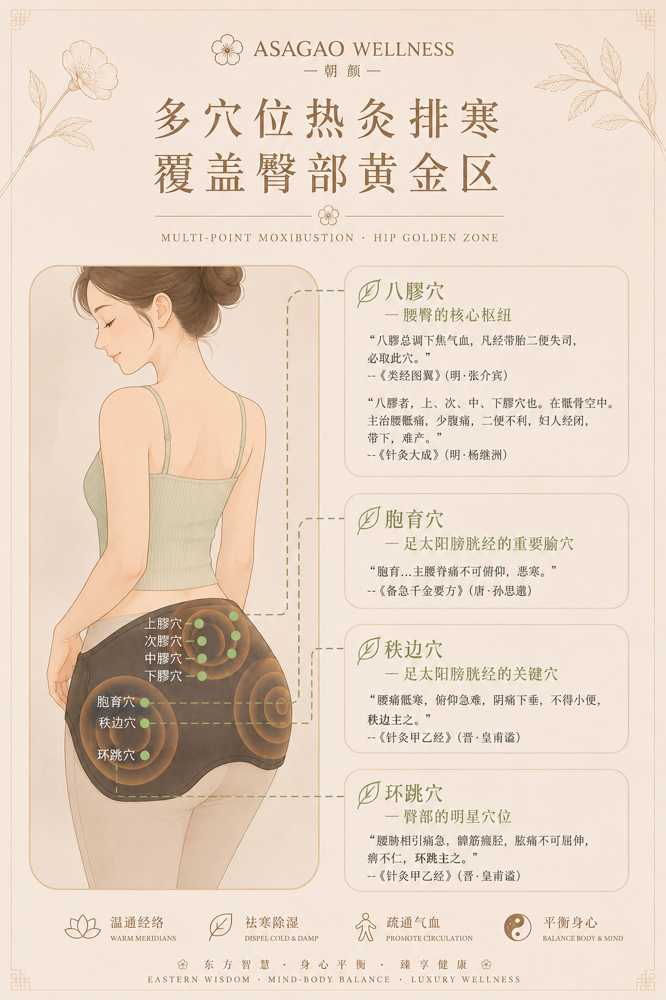
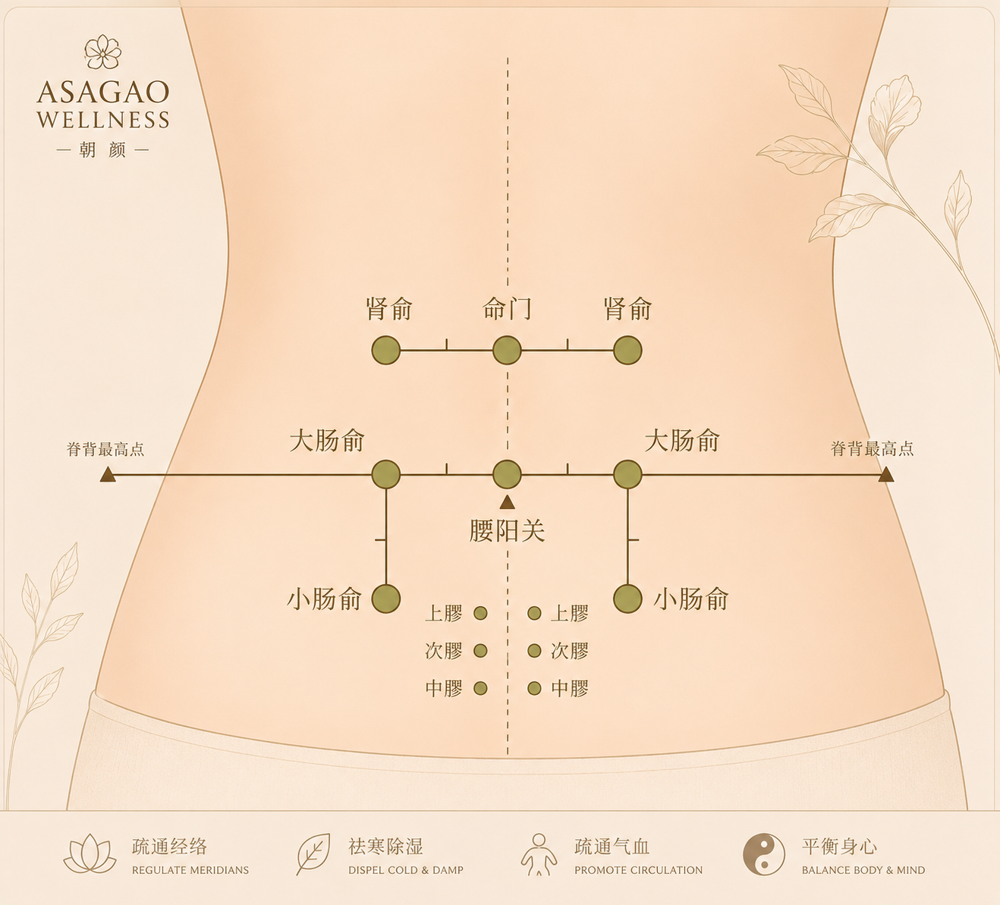
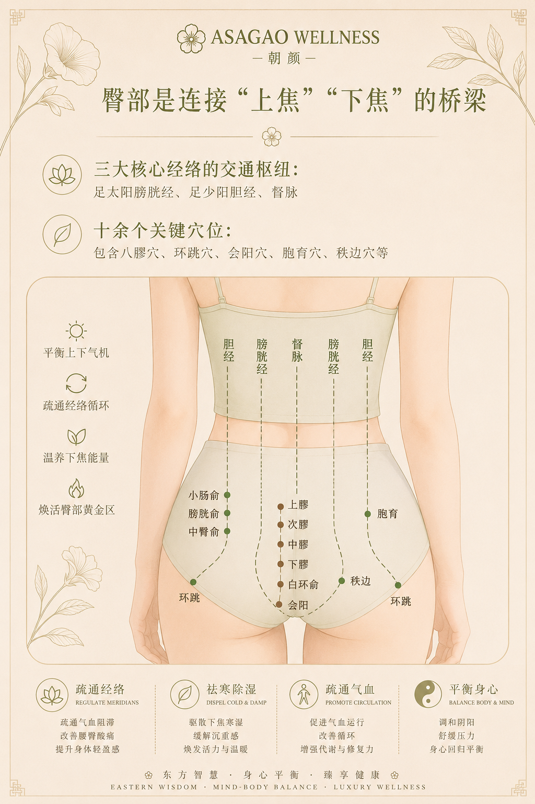
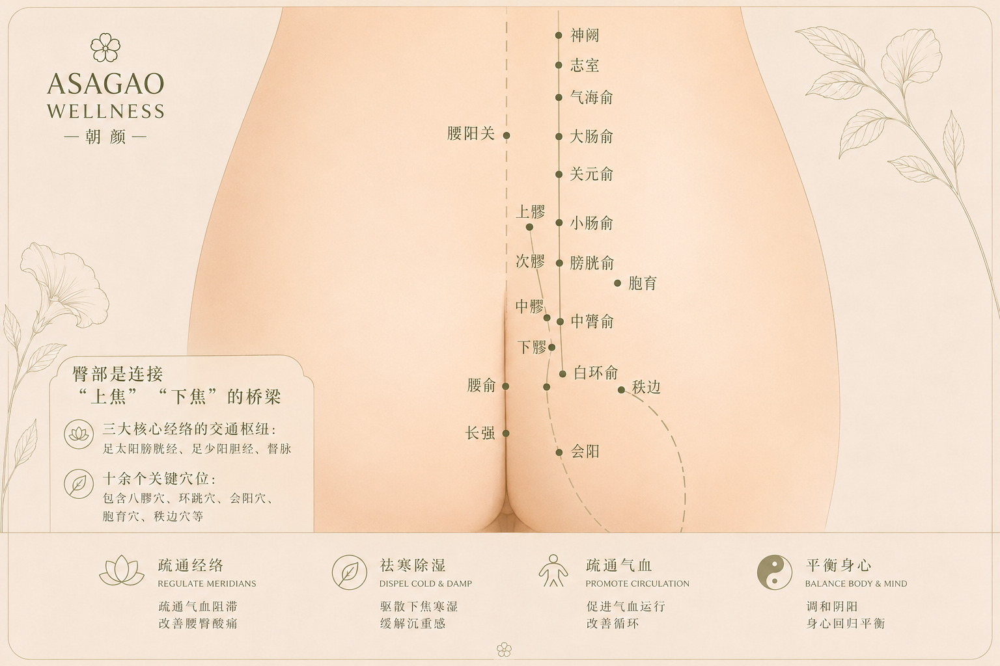

A therapeutic release ritual designed to soften hip tension, support lower-body stability, restore pelvic balance, and encourage grounded ease through slow intentional bodywork.
Inspired by Eastern healing philosophy and quiet luxury wellness, the Lower Back & Hips Release focuses on the hips, sacral region, gluteal muscles, and lower back as essential foundations of posture, circulation, nervous system regulation, and whole-body structural comfort.
Through calming therapeutic touch, gentle pressure, fascia-inspired release, and restorative rhythm, the ritual aims to reduce accumulated tension, improve mobility, support breath flow, and create a deeper sense of grounding and physical stability.

Lower back meridian care · Pelvic grounding · Hip release · Structural balance

ASAGAO WELLNESS · Quiet luxury lower-body therapy

Glutes · Sacral region · Lower-body stability · Deep restorative calm

Glutes · Sacral region · Lower-body stability · Deep restorative calm